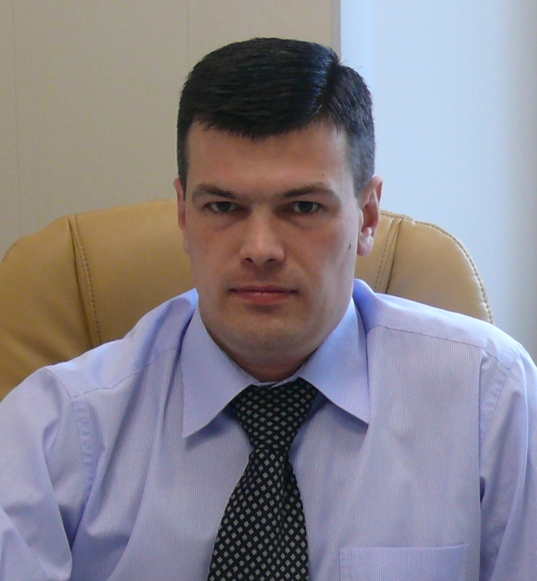

Юрист - ведение дел в судах
Соколов Алексей Владимирович - судебный юрист
Занимаюсь ведением дел в судах, защитой и представлением интересов граждан и организаций в судах и государственных органах Российской Федерации (судебное представительство).
Положительный опыт судебного представительства 16 лет, ведения дел в судах во всех судебных инстанциях. На протяжении этого времени, успешно решаю юридические вопросы своих доверителей.
Специализируюсь на особо сложных категориях гражданских судебных дел, делах по крупным искам, делах по спорам неимущественного характера.
Определяющим фактором для меня является возможность моей помощи, т.е. дела и ситуации в которых я могу помочь, как юрист.
Основные направления юридической практики: семейное право, жилищное право, наследственное право, экономические споры (арбитраж), абонентское юридическое обслуживание.